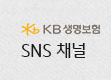
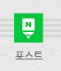
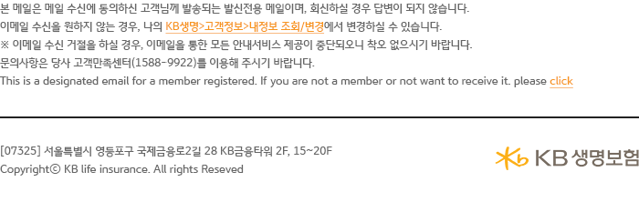

![KB금융그룹 국민의 평생 금융파트너 08월 KB생명 지식비타민 KB생명이 ‘1인가구’에 대한 정보를 알려드립니다! ‘1인 가구’가 노후에 대해 어떻게 생각하고 있을지,미래에 대한 위험들에는 어떤것들이 있는지 알아봅니다. 1.1인 가구 ‘노후’에 대해 어떻게 생각하고 있을까요? 은퇴준비를 위한 관심도 1인 가구 10명중 2명만이 노후준비를 하고 있다! 은퇴준비를 위한 행동 (최근1년) 1인 가구, 은퇴를 위해 필요자금을 계산한다! 은퇴자금 준비방법 많은 1인 가구가 예·적금만으로 은퇴준비를 하고 있다! 2. 1인 가구 에 찾아오는 미래의 위험들, 생각해 보셨나요? 01. 내가 언제까지 건강할 수 있을까요? 노후에는 누구나 한번쯤 큰 질병을 겪을 수 밖에 없습니다. 특히 1인 가구의 경우 이러한 큰 질병을 대비하려면 치료비 이외에도 질병 시 나를 돌봐줄 수 있는 간병인에 대한 비용에 대한 경제적 지출을 고려해야 합니다. 따라서 1인 가구일수록 큰 질병에 대한 건강 챙기기는 물론 경제적 준비가 필요합니다. 02. 내 노후는 어디까지 준비해야 할까요? 가족이 있는 사람들은 노후에 자녀 또는 가족의 도움으로 노후생활에서 찾아오는 경제적 어려움을 해결하기도 합니다. 하지만, 1인 가구의 경우 자녀 또는 가족의 도움을 기대하기 어려운 것이 현실입니다. 따라서 스스로 노후를 풍요롭게 이끌어갈 수 있도록 경제활동기에 미리 노후를 준비하는 것이 중요합니다. 03. 물가상승 및 기대수명 증가는 어떻게 대비할까요? 물가상승 그리고 기대수명 증가 같은 노후의 삶에 대한 위험은 1인 가구 역시 마찬가지로 겪게 되는 문제입니다. 특히 '2인 노인가구에 비해 1인 가구는 생활비 및 지출이 적지 않냐'라고 생각하기 쉽지만 1인 가구 역시 노후에도 기본적인 생활비를 지출할 수 밖에 없으며 갈수록 오르는 물가와 100세 시대를 바라보는 사회를 생각하면 1인 가구일수록 노후준비가 더욱 절실히 필요한 상황입니다.](images/img_cnt.png)